My "brain machine":
Github: https://github.com/asciiscry3r/brainmachine
Base of current without brain machine program, I will write program to portable version in future.
Latest updates on my devices, in result, after first experience with this type of filters and devices, I decide that this type of devices is for lowering apmlitude or ~level~, I wrote this under one of my short videos, of standing waves and lowering quantity of information, only at that place and that line where this is enabled, like my line - PSU, from PSU to filter, filter and much lower after:
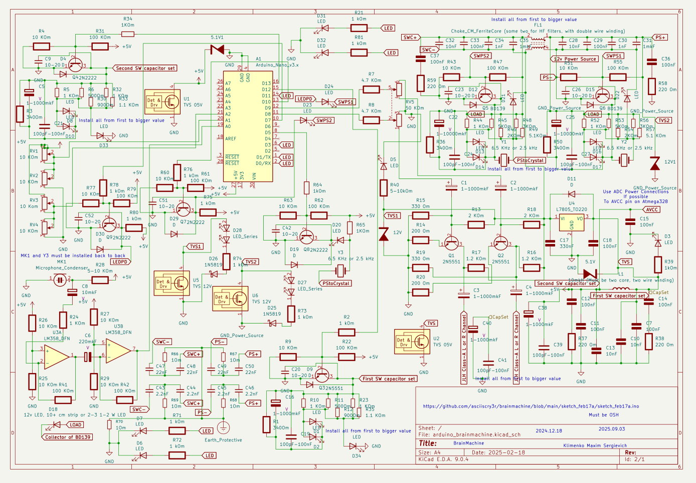Swidched capacitor set and coil at line to l7805 and logic:
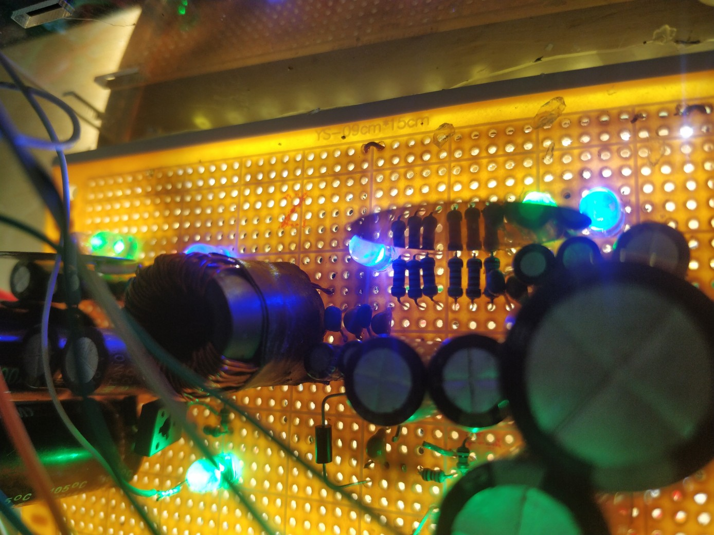 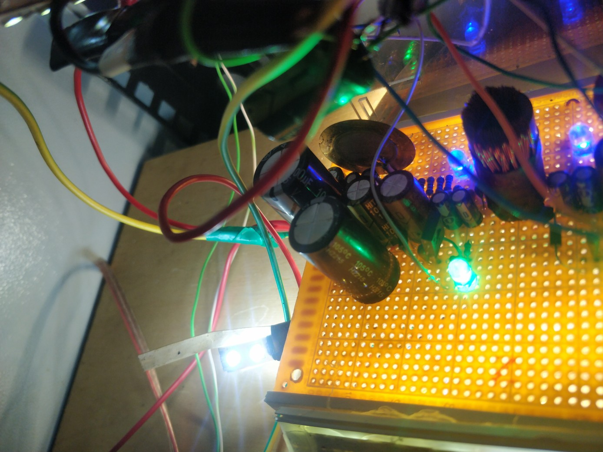In theory, as I understand this, information is 'correct' waves that successfully change biological organisms because of teratogenic effects, some kinds of biological destruction, induction, interaction by the field, to input of cells, and other types of bio electromagnetic effects; this is not a protection, but the load to the organism, from my side, is lower. But I still have effects that change my look and feel from other sources and I live with this for about 5 years minimum. By the way, that fact that this is all a theory, theory with multiple confirmations, doesn't have a critical role in question - use or not, because effects from this device are like emulation of multiple PSU with different 'classic' loads, esd protection devices and randomly, like from multiple users, changes in related to power consumption characteristics, and switched capacitors and 'ground' with programmable characteristic impedance is common in todays devices at people homes. And same type of devices, I don't know their schemes except that they have SWCAP on different loaded lines with same effects in result, we can buy for offices, server rooms, etc.
History:
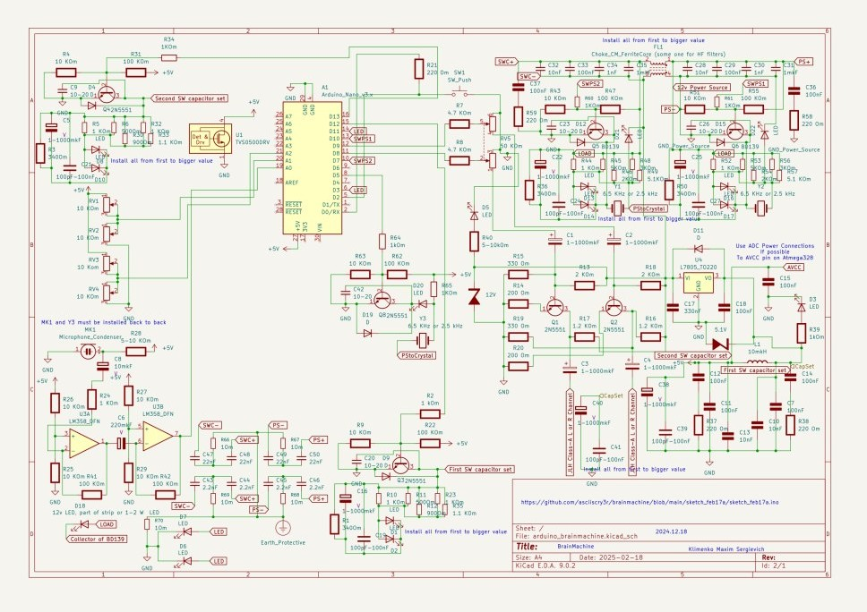 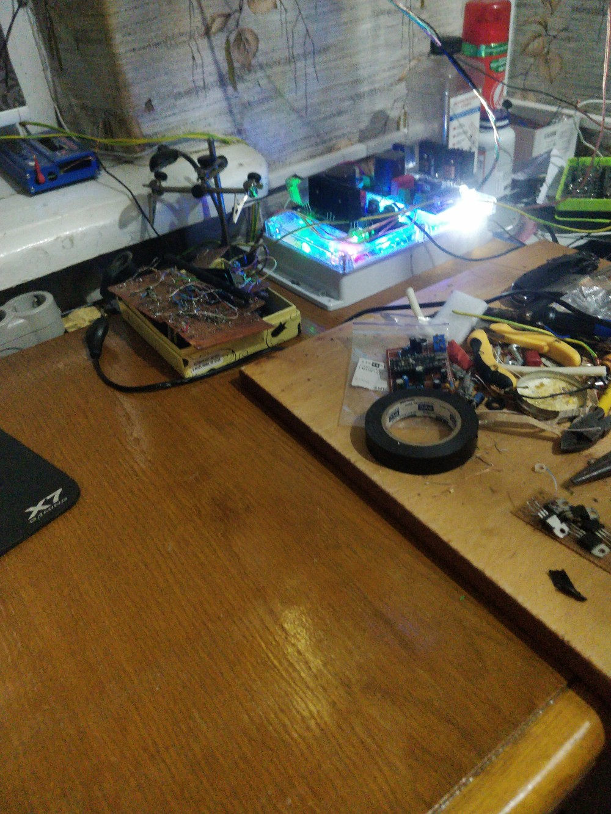 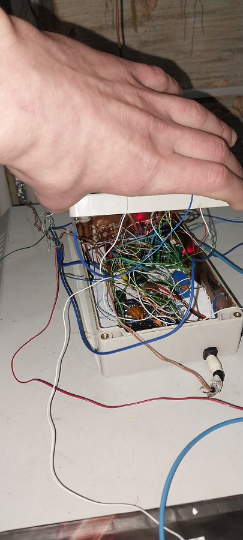

In life, when, I start this for first time, it’s difficult to understand the background EMF that passes in the speakers coils:
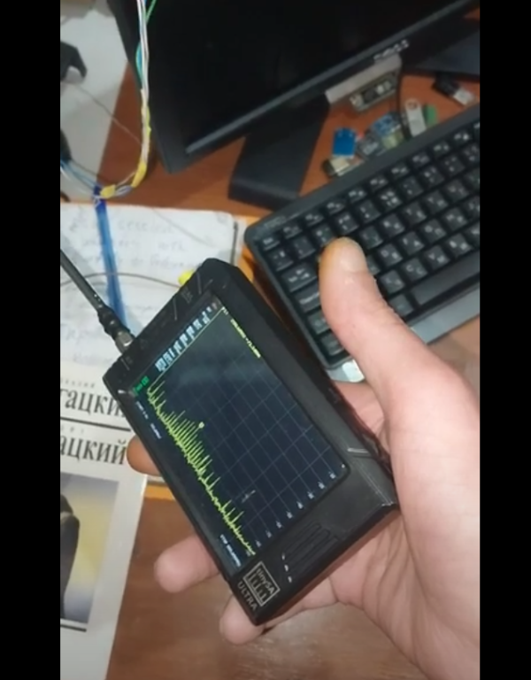Updates and workarounds:
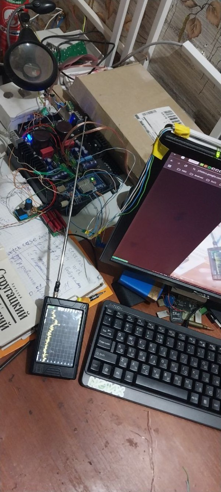 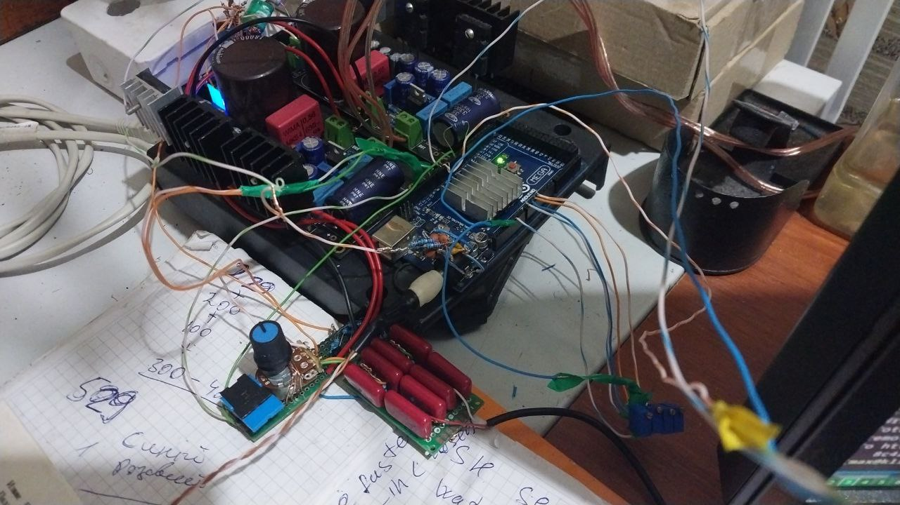 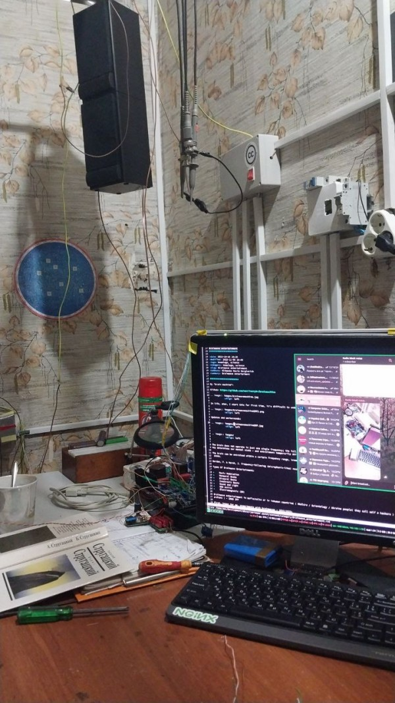 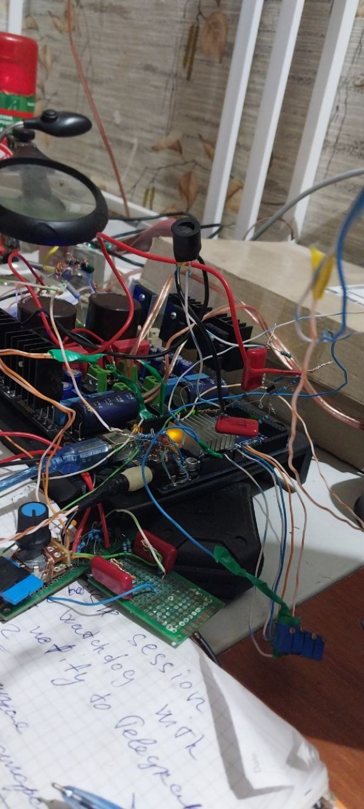The brain does not operate in just one single frequency; the full spectrum of brainwave frequencies are always running, all the time. The dominant frequency determines our mental state – and entrainment temporarily shifts our mental state by boosting one frequency to be louder than the others.
The brain can be entrained within a certain frequency range, known as the Frequency Following Response (FFR) and was discovered by neuroscientists in the 1930s.
Worden, F. & Marsh, J. Frequency-following (microphonic-like) neural responses evoked by sound. Electroencephalogr. Clin. Neurophysiol. 25, 42–52 (1968).
- Delta Waves – (0.1 – 3.9 Hz) — When in a deep, dreamless sleep. Newborns sleep in this stage, adults less so.
- Theta Waves – (4 – 7.9 Hz) — Dreaming sleep (REM), this is the goal for meditation or self-hypnosis.
- Alpha Waves – (8 – 13.9 Hz) — Relaxed, daydreaming and watching TV.
- Beta Waves – (14 – 30 Hz) — The awake state. Engaged in activities and conversation.
- Gamma Waves – (31 Hz+) — Hyper alert, good for insights and higher learning.
Types Of Brainwave Entertainment:
- Music Modulation
- Monaural Beats
- Binaural Beats
- Isochronic Beats
- Sound and Light
- EEG Active
- Electromagnetic (EM)
Artifical telepathy and tele control
First, known for me, experiments with brainwaves - 1922/1923:
Кажинский Бернард - Биологическая радиосвязь/Kazhinsky Bernard - Biological radio communication
And first experiments with mental state transplantation.
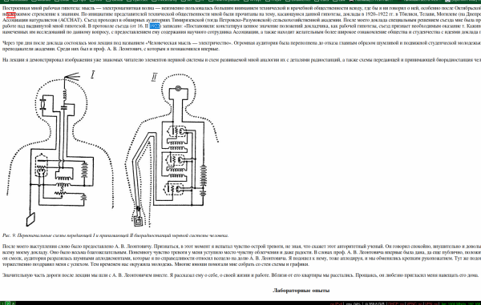 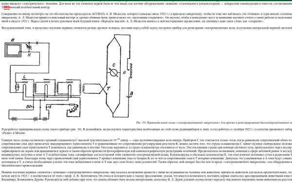"For me, looking for an analogy between the elements of the nervous system and the details of a radio station, it was clear that the author of the book did not find it possible (at least at that time) to attribute the meaning of "self-induction coils" to spirals in nerves. This conclusion was also confirmed by the fact that in the second place of the same book, A. V. Leontovich only casually mentions the capacitor phenomenon in the nervous system according to the theory of V. M. Bekhterev.[3] By the way, it will be noted that I did not find an indication of the analogy with the oscillations of the Thomson contour in the works of V. M. Bekhterev. Consequently, this question is completely new, not yet studied and awaiting its development."
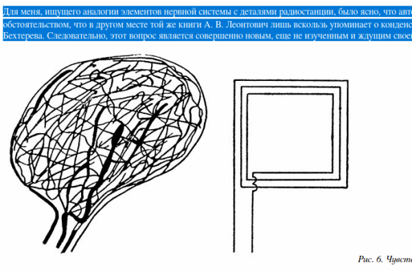Plan
pavlov dog experiment https://www.google.com/search?client=firefox-b-d&q=pavlov+dogs
50 Hz field in living rooms - non nathural brain development
Power signals from electrical devices - EMF tele control but only n some places and this can be current injectino
Transformers
VHF/UHF and Computers and TV - ideology
Food/Water Drugs - CNS damage
Brainwave sync - control of human
pattern of development - piracy or ~hackers~ ideology
memory - gipocampus/brain damage by microwave/uhf or vhf
https://en.wikipedia.org/wiki/Interactive_specialization
https://www.med-technews.com/news/neurostimulation-sleep-headset-made-available-worldwide/
https://www.amazon.com/Muse-2-Brain-Sensing-Headband/dp/B07HL2S9JQ
https://sites.google.com/a/emotiv.com/wiki/about-emotiv-1/about-epoc
https://store.neurosky.com/products/painpal
https://www.diygenius.com/hacking-your-brain-waves/
https://brainworksneurotherapy.com/about/faq/what-brainwave-entrainment/